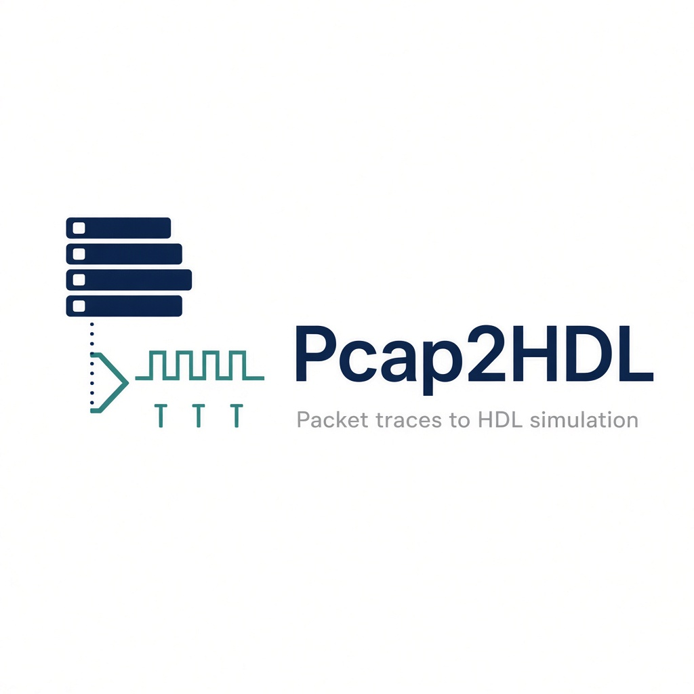

Pcap2HDL
Replay captured network traces in a cycle-accurate SystemVerilog simulation.
What it is
Pcap2HDL streams .pcap files into Verilator through DPI-C (libpcap).
Each captured byte is driven on an AXI-Stream-like bus
(tdata, tkeep, tvalid, tready,
tstart, tlast) so hardware under test can see the same frames a NIC would,
with simulation time frozen for debug.
Typical uses: early bring-up of FPGA or ASIC packet pipelines (classification, DPI, RoCE-aware paths) before silicon or a live Ethernet port is available. Current release: 0.3.0.
Build
sudo apt install build-essential libpcap-dev git clone https://github.com/khademullah/Pcap2HDL.git cd Pcap2HDL make MAX_PACKETS=8
Traces
Capture files stay local (they are gitignored). Generate a tiny ARP/TCP/VXLAN/runt pcap for CI-style gates:
python3 scripts/gen_pcap.py ci.pcap make PCAP=ci.pcap MAX_PACKETS=8 BP=2